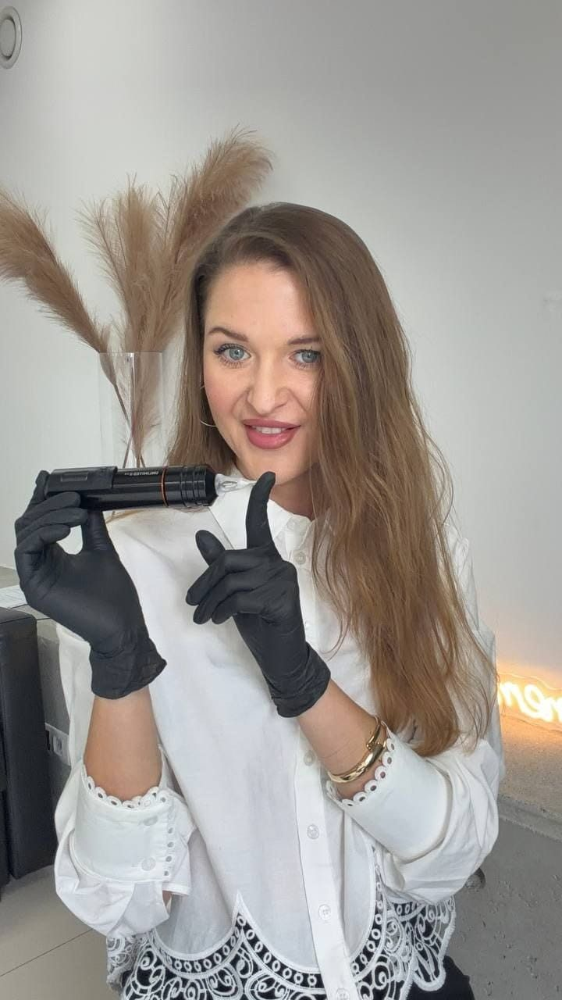
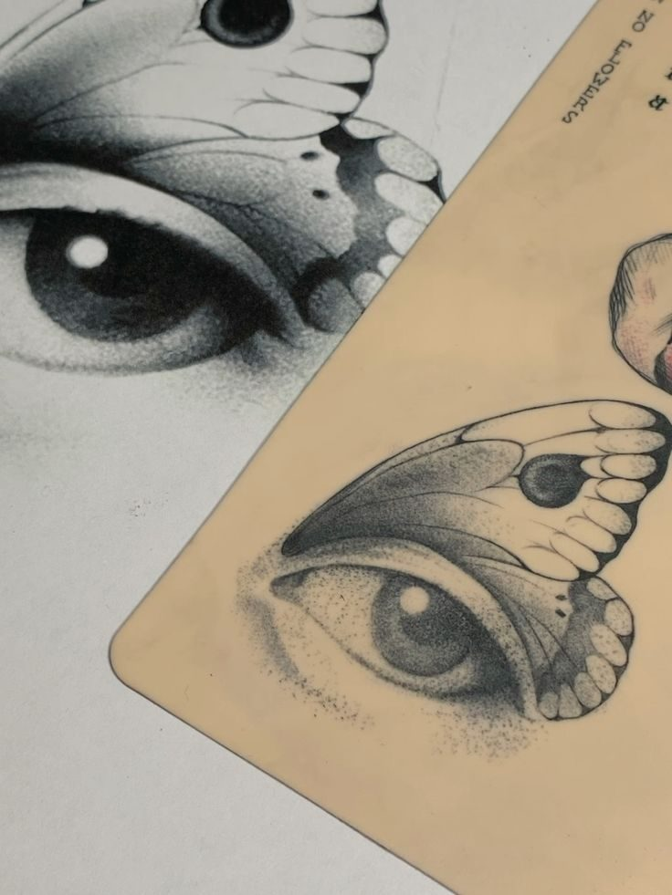
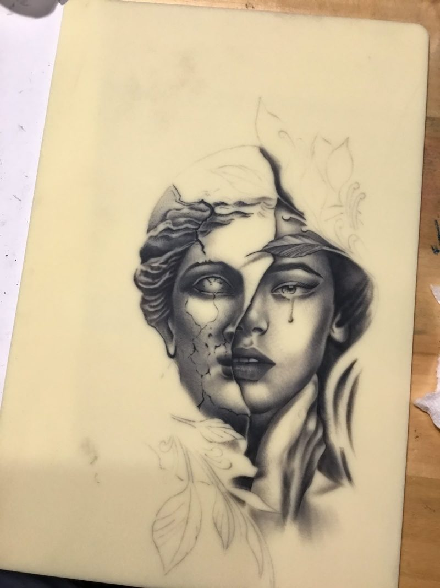
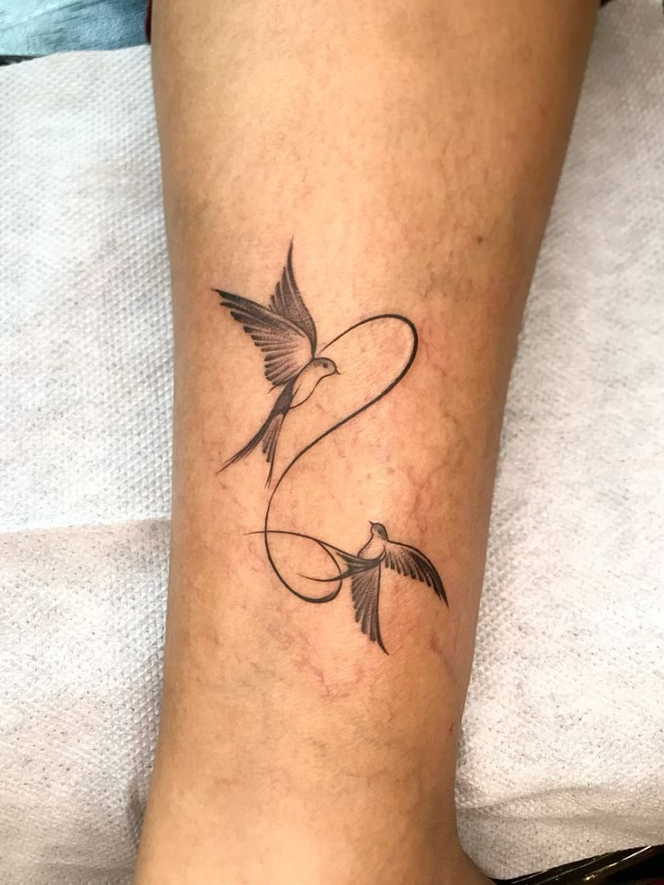
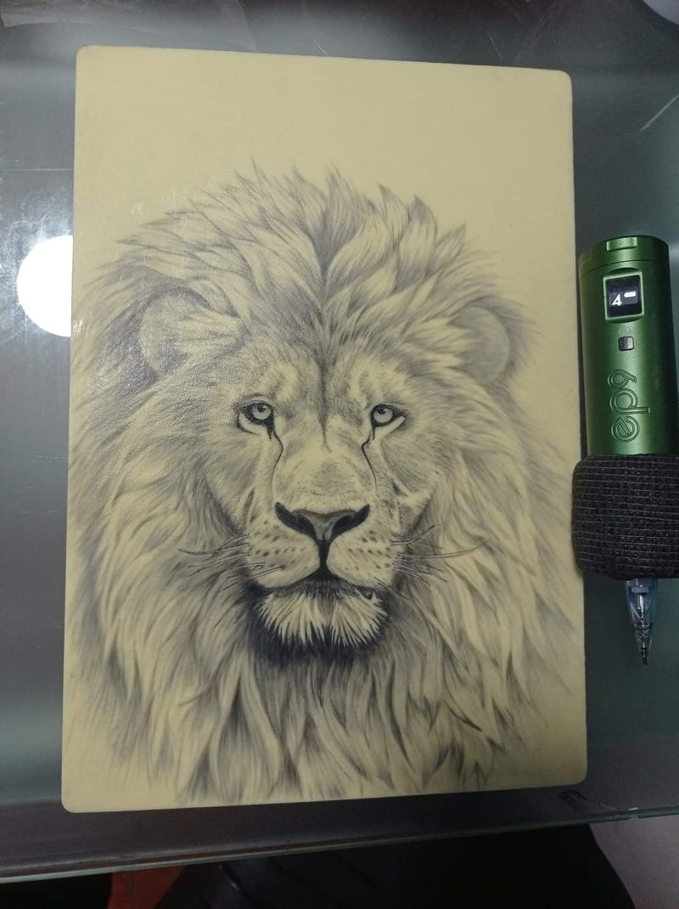
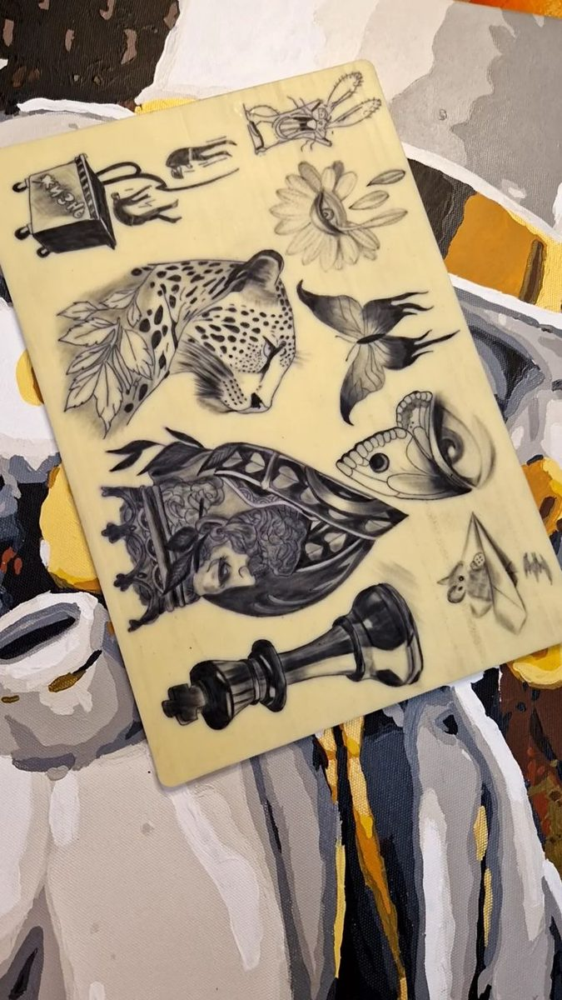
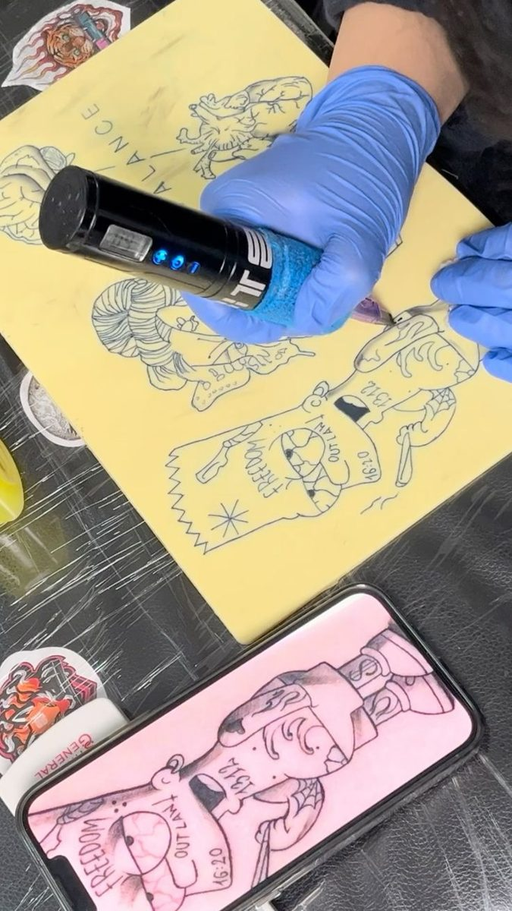
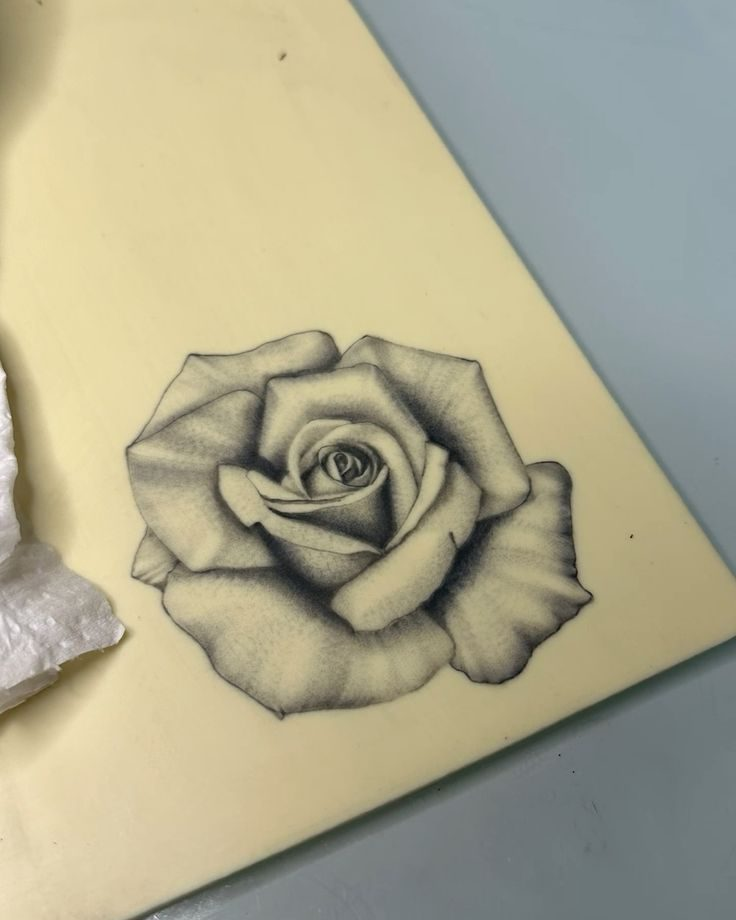
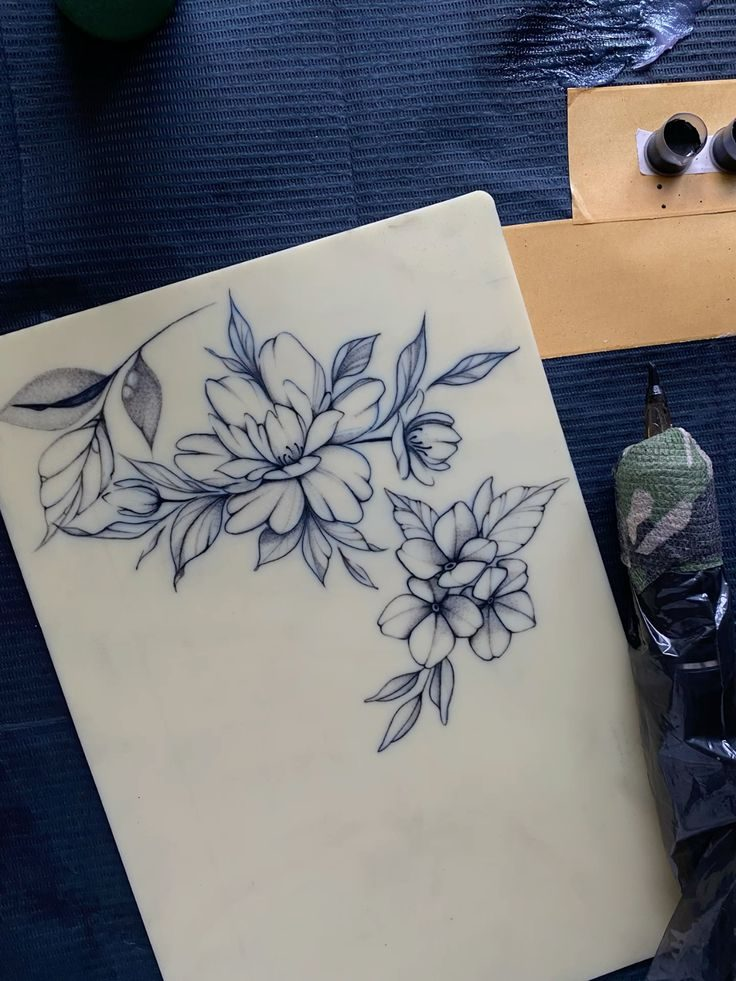

День1
Старт і безпека
- Як насправді виглядає професія тату-майстра
- Стерилізація, гігієна і організація робочого місця
- Список обладнання для старту: що купувати, а що ні
Зрозумієш, з чого складається робота майстра, і не витратиш гроші даремно.
Хочеш у тату, але не знаєш, з чого почати, і боїшся дорогих помилок? За 5 днів ти зробиш перші лінії на штучній шкірі й зрозумієш, чи твоя це професія.
Доступ одразу після оплати · 14 днів гарантія повернення коштів

Роботи випускників навчання: від перших ліній на штучній шкірі до охайних, впевнених ліній у тату. Кожен із них розпочинав з нуля або мав мінімальне розуміння та досвід, як робити тату і як тримати машинку в руці.








Що потрібно, щоб стати впевненим тату-майстром: головне — ваше бажання спробувати.
Якщо впізнав себе хоча б в одному пункті — цей міні-курс для тебе.
Здається, що спершу треба ідеально малювати, купити дороге обладнання або «дочекатися моменту». Місяці йдуть, а першого кроку так і немає.
Один майстер радить одне, інший — інше. Інформації багато, а розуміння, з чого починати, немає. Ментора теж немає.
Страх помилки й шкоди клієнту тримає на місці. Теорія є, а до практики справа не доходить.
Ти думаєш, що тату — лише для тих, хто малює від природи. Насправді це техніка і практика, а їх можна відпрацювати.
Не треба самостійно розбиратися, яке обладнання купувати і з чого починати. Отримуєш покроковий план на 5 днів і список обладнання для старту — вже в першому уроці.
Усі вправи виконуються на штучній шкірі. Можна помилятися скільки завгодно — саме для цього вона й існує. Жодного страху нашкодити комусь.
Ти виконуєш завдання, а Вікторія розбирає твою роботу: що зроблено правильно, де помилки й як їх виправити, щоб ти не закріплював неправильну техніку.
Більшість новачків провалюються не через відсутність таланту, а через відсутність системи.
Кожен урок будується на попередньому: спочатку безпека й обладнання, потім машинка та шкіра, потім постановка руки й лінії. Жодного стрибка через етапи — тільки логічна прогресія.
Кожного дня — практичне завдання на штучній шкірі, без ризику помилитися. М'язова пам'ять формується через дію, а не через перегляд відео.
Помилки видно одразу: Вікторія пояснює, що виправити, поки неправильна техніка не стала звичкою.
Кожного дня — новий урок і практичне завдання на штучній шкірі. 30–60 хвилин на день.
Зрозумієш, з чого складається робота майстра, і не витратиш гроші даремно.
Розберешся в обладнанні й принципі роботи зі шкірою.
Виконаєш свої перші лінії на штучній шкірі.
Створиш ескіз за допомогою AI і зробиш за ним практику.
Матимеш чіткий план: що відпрацьовувати далі.
Перелік того, що справді потрібне на початку. Базовий набір для навчання на штучній шкірі коштує від 60–80 €.
Допомагає створювати й допрацьовувати ескізи, шукати ідеї та швидше вирішувати робочі задачі. Працює на даних курсу і студії Sarna.
Шаблон для розрахунку ціни роботи, щоб не працювати собі в збиток.
Готові ескізи в різних стилях, з якими можна практикувати одразу.
Короткий перелік типових помилок на старті: від постановки руки до глибини голки. Перевіряй себе перед кожною практикою й не повторюй чужих помилок.
Я не теоретик, а практикуюча майстриня, яка щодня працює з клієнтами і бачить, які помилки роблять новачки. У мене вища художня освіта і величезна насмотреність — перш ніж знайти свій стиль, я спробувала працювати в різних стилях, тому точно допоможу тобі знайти свою сильну сторону і опанувати всі технічні навички.
Учні школи з різних країн. Усі почали з нуля.
Stripe: безпечна оплата карткою. Одразу отримуєш доступ у Telegram.
Дивишся короткі відеоуроки у зручний час і одразу переходиш до практики.
Практикуєшся на штучній шкірі й надсилаєш результат.
Вікторія розбирає роботу: що зроблено правильно, де помилки й як їх виправити.
Без курсу — місяці хаотичних пошуків, суперечливі поради, страх зробити перший крок. З курсом — покрокова система, практика на штучній шкірі й розбір твоїх робіт від Вікторії.
Якщо протягом 14 днів зрозумієш, що курс не підходить, — поверну кошти без зайвих питань. Просто напиши мені. Ти нічим не ризикуєш.
Саме для цього й існує міні-курс: зрозуміти, чи підходить тобі ця сфера, без великих вкладень. 14 € і 5 днів. Плюс є 14-денна гарантія повернення коштів.
Ні. Навички малювання не обов'язкові, хоча й вітаються. Тату — це техніка і практика, а не лише талант: постановка руки, контроль глибини, рівномірний рух відпрацьовуються.
Ні. У першому уроці ти отримаєш список обладнання для старту. Базовий набір для навчання на штучній шкірі коштує від 60–80 €.
Орієнтовно 30–60 хвилин на день протягом 5 днів. Новий урок відкривається щодня.
При правильній техніці крові практично не видно. Усі вправи міні-курсу виконуються на штучній шкірі.
Уроки побудовані крок за кроком: від того, як тримати машинку, до перших ліній на штучній шкірі, і кожен крок показано на відео. Якщо щось не виходить, ти можеш надіслати завдання й отримати зворотний зв'язок від Вікторії. А якщо курс не підійде, є 14-денна гарантія повернення коштів.
Ні, достатньо смартфона: навчання проходить через Telegram, і дивитись уроки та надсилати завдання зручно з телефону.
Навчання доступне з 18 років — це стандартна вимога для роботи в тату-індустрії.
Ти матимеш правильну базу, розуміння принципів і чіткий план розвитку. Для роботи з реальними клієнтами потрібна додаткова практика, але ти знатимеш, що саме відпрацьовувати.
14 € замість 99 €. Доступ одразу після оплати, 14 днів гарантії повернення коштів.
Оплата через Stripe. Усі дані захищені. Старт одразу після оплати: перший урок відкривається в день оплати, далі — по одному щодня.
Міні-курс для новачків від Вікторії Поникарової: 5 днів, прості уроки й зворотний зв'язок
До кінця акції
14 днів гарантія повернення — без зайвих запитань
Усі дані захищені та потрібні лише для зв'язку з менеджером